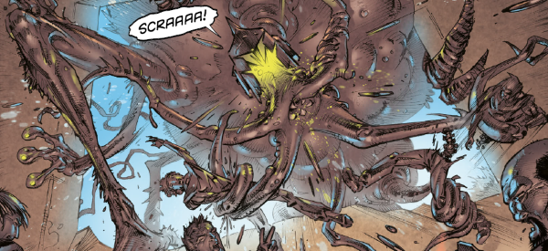

What if a planet was out to get you? There was Death Planet (1978), but really that was just xeno-wilderness survival: there was no sentient malevolance there. There was The Hungry Planet (from 1980's Judge Child quest), but it never even gave you a chance to land.
Maybe the first-best contender would be the planet Gordon from Ace Trucking's Too Many Bams (1982), then the possessed Earth of Mean Team (1987), the mystical Gennyo-Leil of Firekind (1993), Hestia from Judge Dredd's Tenth Planet / Wilderlands epic (1994) and finally (perhaps inspired by all that went before) there's Chronos from Zombo (2009).
Blunt's schtick is an assimilatory hyper-evolution and a Dreddverse setting that pulls in the Zhind from Insurrection.
Art by Boo Cook
| Story Title | Parts | Pages | w indicates a wraparound coverCovers | Year(s) | Issues | Writer | Artist | Colourist | Letterer |
|---|---|---|---|---|---|---|---|---|---|
| Blunt | 8 | 65 | 372: Boo Cook 1 | 2016 | M372-M379 | T.C. Eglington | Boo Cook | <-- | Simon Bowland |
| Blunt II | 8 | 65 | M404: Boo Cook 1 | 2018-2019 | M400-M407 | T.C. Eglington | Boo Cook | <-- | Simon Bowland |
| Blunt III | 8 | 65 | 0 | 2019-2020 | M415-M422 | T.C. Eglington | Boo Cook | <-- | Simon Bowland |
| year | episodes | pages |
| 2002 | 0 | 0 |
| 2003 | 0 | 0 |
| 2004 | 0 | 0 |
| 2005 | 0 | 0 |
| 2006 | 0 | 0 |
| 2007 | 0 | 0 |
| 2008 | 0 | 0 |
| 2009 | 0 | 0 |
| 2010 | 0 | 0 |
| 2011 | 0 | 0 |
| 2012 | 0 | 0 |
| 2013 | 0 | 0 |
| 2014 | 0 | 0 |
| 2015 | 0 | 0 |
| 2016 | 8 | 65 |
| 2017 | 0 | 0 |
| 2018 | 4 | 32 |
| 2019 | 5 | 89 |
| 2020 | 7 | 9 |
| 2021 | 0 | 0 |
| 2022 | 0 | 0 |